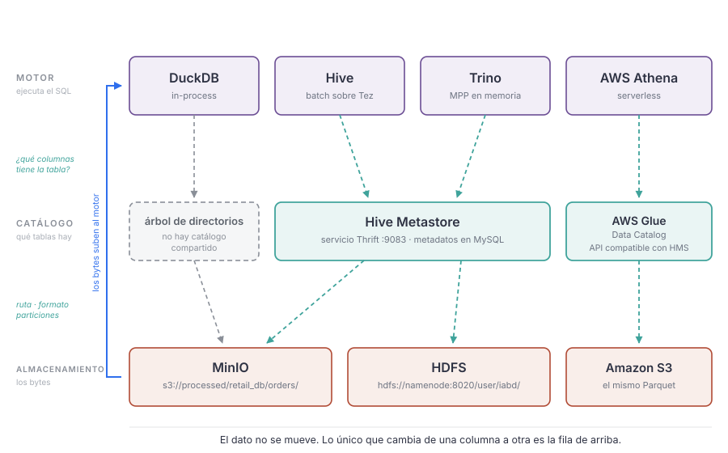
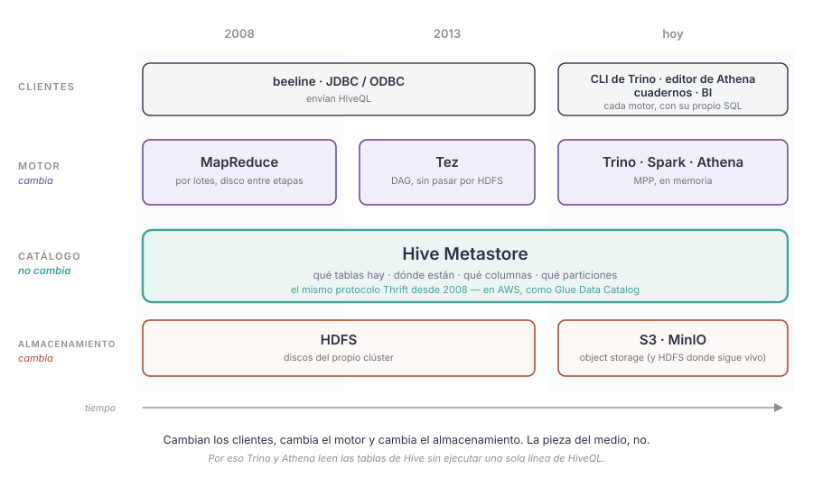
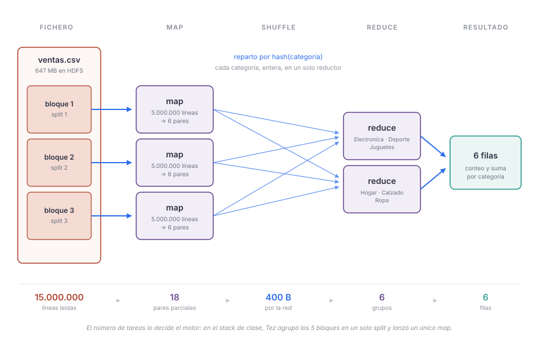
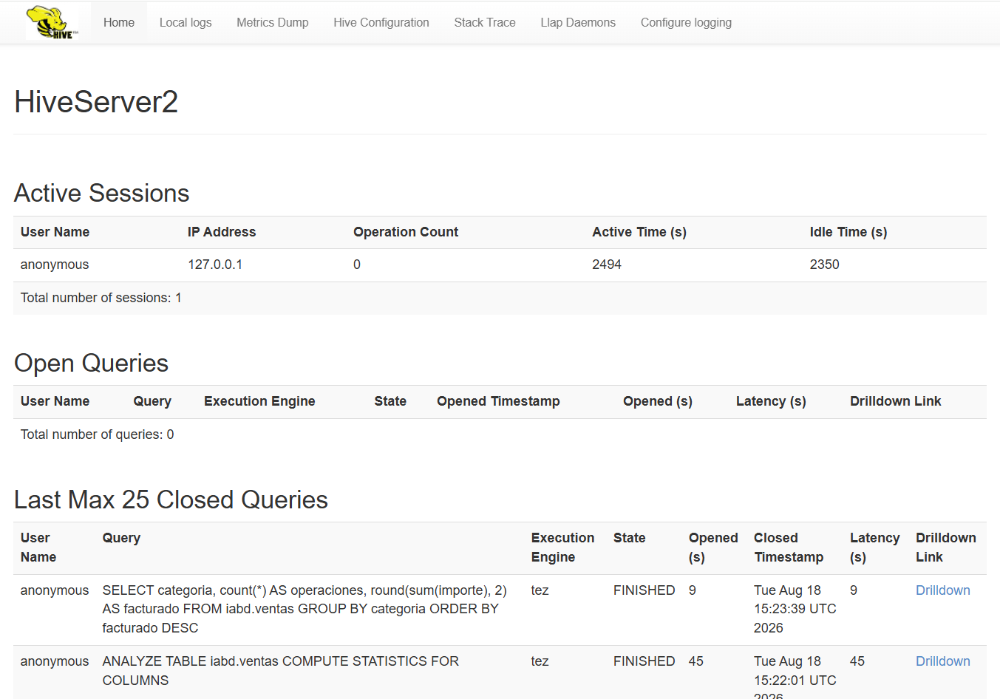
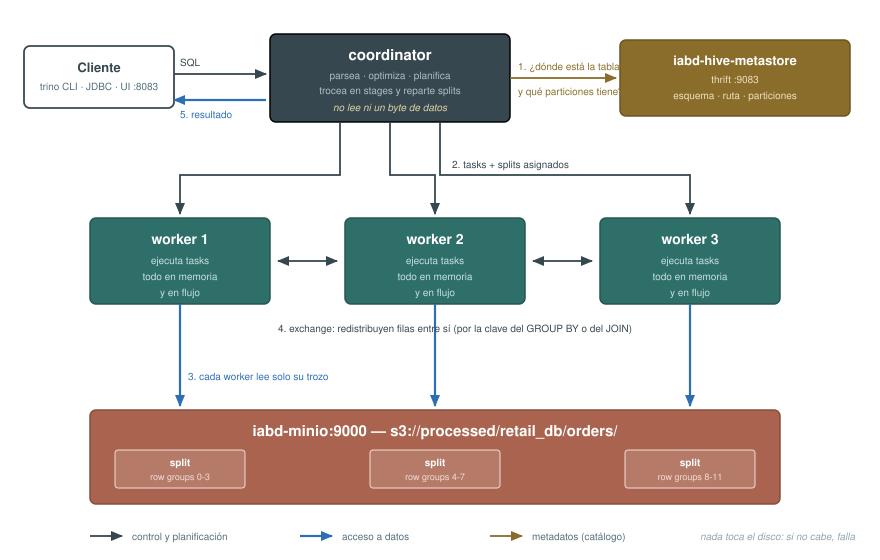
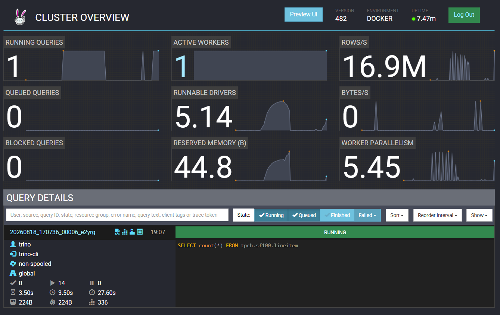

Changelog:
- Nueva creación — Agosto 2026
Motores de consulta¶
Imagina que tenemos 40 GB de Parquet en s3://processed/. Un analista pregunta cuántos pedidos se cerraron el mes pasado por ciudad. La respuesta clásica de hace quince años era: carga los datos en el data warehouse. Es decir, copia 40 GB, escribe una ETL, prográmala, paga el almacenamiento dos veces, y vuelve mañana.
La respuesta del lago de datos es la contraria: el dato ya está en su sitio; lo que llevamos hasta él es el motor que realiza la consulta.
En un data warehouse, el motor, el catálogo y el almacenamiento son el mismo producto. En un lago de datos son tres piezas independientes que puedes cambiar por separado.
Y de ahí salen las cuatro preguntas que vamos a responder:
- Si el fichero no está dentro de ninguna base de datos, ¿quién sabe qué columnas tiene?
- Si mi portátil se queda corto, ¿qué cambio: el dato o el motor?
- Si cambio de motor, ¿tengo que volver a definirlo todo?
- Si no tengo servidores, ¿qué estoy pagando exactamente?
Vamos a responderlas con cuatro motores distintos leyendo los mismos ficheros: DuckDB, Hive, Trino y AWS Athena, donde podremos comprobar que el patrón motor + catálogo funciona, que el esquema se aplica al leer (schema-on-read), y que podemos federar consultas entre motores distintos.
Punto de partida¶
Esta sesión continúa donde terminó la sesión anterior sobre Almacenamiento distribuido, así que damos por hecho que, al menos, tienes:
ventas.csven HDFS, dentro de/user/root/data,- los pedidos en Parquet particionado por
order_statusens3://processed/retail_db/orders/.
El stack que necesitamos combina el lago (lake: HDFS, YARN, MinIO, Hive, Trino y mysql-retail) con el nodo de trabajo (lab: DuckDB y JupyterLab):
docker compose --profile lake --profile lab up -d
| Servicio | Para qué lo usamos | Dónde se ve |
|---|---|---|
namenode / datanode |
HDFS, el almacenamiento de la parte de Hive | http://localhost:9870 |
resourcemanager |
YARN | http://localhost:8088 |
minio |
el lago, s3://processed/ |
http://localhost:9001 |
mysql-metastore |
dónde se guardan los metadatos del catálogo | localhost:3306 |
hive-metastore |
el servicio que sirve esos metadatos | 9083 |
hiveserver2 |
el motor de Hive | http://localhost:10002 |
trino |
el motor MPP | http://localhost:8080 |
mysql-retail |
origen operacional, para la federación | localhost:3307 |
lab |
DuckDB y JupyterLab | http://localhost:8888 |
Si no conservas los datos de la sesión anterior
Si tienes que regenerar los datos, lo puedes hacer con los mismos comandos que en la sesión anterior:
En DuckDB:
INSTALL httpfs; LOAD httpfs;
CREATE OR REPLACE SECRET minio (
TYPE s3, KEY_ID 'minioadmin', SECRET 'minioadmin123',
ENDPOINT 'minio:9000', URL_STYLE 'path', USE_SSL false
);
COPY (SELECT * FROM read_csv('/sample-data/orders.csv'))
TO 's3://processed/retail_db/orders'
(FORMAT PARQUET, PARTITION_BY (order_status), OVERWRITE_OR_IGNORE);
Y ventas.csv vuelve a HDFS con los dos saltos de siempre:
docker compose cp ./sample-data/ventas.csv namenode:/tmp/ventas.csv
docker compose exec namenode hdfs dfs -put -f /tmp/ventas.csv data
El patrón motor + catálogo¶
En una base de datos relacional (o en un data warehouse como Redshift o Snowflake) el esquema se valida al escribir: si intentas insertar "hola" en una columna INT, el INSERT falla. A cambio, el motor es el dueño del dato: lo guarda en su formato interno, en su disco, y nadie más lo lee. Es el schema-on-write.
En un lago de datos los ficheros están ahí, en s3:// o en hdfs://, en CSV, JSON o Parquet. Nadie los ha validado. El esquema se aplica al leer, cuando un motor abre el fichero y decide cómo interpretar esos bytes. Esto es lo que se conoce como schema-on-read.
Si los comparamos:
| Schema-on-write (warehouse) | Schema-on-read (lago) | |
|---|---|---|
| Cuándo se valida el esquema | al escribir | al leer |
| Quién es dueño del fichero | el motor | nadie / todos |
| Formato | interno, propietario | abierto (Parquet, ORC, Avro...) |
| Coste de ingestar | alto (ETL previa) | casi cero (copiar el fichero) |
| Coste de equivocarte | se detecta al escribir | se detecta al leer, meses después |
| Cambiar de motor | migración | cambiar de proceso |
La ventaja del schema-on-read es enorme y es la que justifica todo el lago, ya que puedes guardar hoy datos cuyo uso todavía no conoces, lo que implica que no necesitamos diseñar el modelo antes de tener los datos.
La desventaja es la cara B exacta de lo mismo: nadie garantiza que el fichero de hoy tenga las mismas columnas que el de ayer. Cuando el lago acumula ficheros que nadie sabe leer ni de quién son, deja de ser un lago y se convierte en un data swamp. La solución a eso son los open table formats, que estudiaremos más adelante.
Las tres capas¶
Un motor de consultas sobre el lago siempre trabaja sobre tres capas separadas:
| Capa | Responsabilidad | En nuestro stack | En AWS |
|---|---|---|---|
| Almacenamiento | guardar los bytes | HDFS y MinIO (s3://processed/...) |
Amazon S3 |
| Catálogo | qué tablas hay, dónde están, con qué esquema y qué particiones | Hive Metastore (sobre mysql-metastore) |
AWS Glue Data Catalog |
| Motor | planificar y ejecutar el SQL | DuckDB, Hive, Trino, Spark | Athena, EMR, Redshift |

Al tener tres capas separadas y desacopladas, podemos cambiar de motor sin tocar el dato, tener dos motores leyendo la misma tabla a la vez, o incluso tirar el catálogo y reconstruirlo desde los ficheros. Nada de eso es posible en un data warehouse.
Los cuatro motores de la sesión
Con las tres capas claras, los motores se distinguen solo por dónde corre el proceso que ejecuta el SQL:
| Tipo | Quién ejecuta | Ejemplos |
|---|---|---|
| In-process | una librería dentro de tu proceso | DuckDB |
| Batch distribuido | un clúster que trocea la consulta en tareas y las pasa por disco | Hive sobre MapReduce / Tez |
| MPP distribuido | un clúster que tú operas, todo en memoria y en flujo | Trino, Spark |
| Serverless gestionado | un clúster que opera otro y tú no ves | AWS Athena, BigQuery |
El catálogo¶
El catálogo (o metastore) es un diccionario. No guarda datos, guarda metadatos, como son:
- la lista de bases de datos y tablas,
- la ruta física de cada tabla (
s3://processed/retail_db/orders/), - el formato de los ficheros (Parquet, CSV, JSON...),
- el esquema: nombre y tipo de cada columna,
- las particiones existentes y dónde está cada una,
- y opcionalmente, estadísticas (número de filas, valores mínimos y máximos por columna) que el optimizador usa para elegir el plan.
A día de hoy, en el mercado laboral, las implementaciones más habituales son:
- Hive Metastore (HMS): el estándar de facto del mundo open source. Es un servicio que habla el protocolo Thrift por el puerto
9083y guarda los metadatos en una base de datos relacional. En nuestro stack es el contenedorhive-metastore, y la base de datos que hay detrás esmetastore, enmysql-metastore. - AWS Glue Data Catalog: la versión gestionada de AWS, compatible con la API de Hive Metastore. Es el catálogo que usan Athena, EMR, Redshift y Glue.
- Unity Catalog (Databricks) y Apache Polaris: la generación moderna de catálogos, que además de esquemas, permite gestionar permisos, linaje y catálogos de varios formatos de tabla.
DuckDB sobre el lago¶
Ya sabemos usar DuckDB contra MinIO desde la sesión de Almacenamiento distribuido, así que la puesta en marcha es un recordatorio rápido.
docker compose exec lab duckdb
INSTALL httpfs;
LOAD httpfs;
CREATE OR REPLACE SECRET minio (
TYPE s3,
KEY_ID 'minioadmin',
SECRET 'minioadmin123',
ENDPOINT 'minio:9000',
URL_STYLE 'path',
USE_SSL false
);
import duckdb
con = duckdb.connect()
con.sql("INSTALL httpfs; LOAD httpfs;")
con.sql("""
CREATE OR REPLACE SECRET minio (
TYPE s3,
KEY_ID 'minioadmin',
SECRET 'minioadmin123',
ENDPOINT 'localhost:9000',
URL_STYLE 'path',
USE_SSL false
);
""")
El endpoint depende de dónde ejecutes
Desde dentro de la red del compose el endpoint es minio:9000, que es el nombre del servicio. Desde tu máquina es localhost:9000, porque el docker-compose.yml publica ese puerto.
Es la confusión número uno de estas sesiones, y produce siempre el mismo error: un tiempo de espera agotado que no dice nada. Si te pasa, lo primero que hay que comprobar es desde dónde estás lanzando la consulta.
Consultar sin catálogo¶
Partimos de los datos que dejaste particionados por order_status en la sesión anterior. Lo primero que llama la atención es que no hay que crear nada, podemos consultar directamente los ficheros:
SELECT count(*)
FROM 's3://processed/retail_db/orders/**/*.parquet';
-- ┌──────────────┐
-- │ count_star() │
-- │ int64 │
-- ├──────────────┤
-- │ 68883 │
-- └──────────────┘
Sin CREATE TABLE, sin CREATE DATABASE, sin LOAD. Le pasas una ruta con comodines y DuckDB la resuelve, abre los ficheros, lee sus pies de página (footers) y de ahí saca el esquema:
DESCRIBE SELECT *
FROM read_parquet('s3://processed/retail_db/orders/**/*.parquet',
hive_partitioning = true);
-- ┌─────────────────────────────┐
-- │ Describe │
-- │ │
-- │ order_id bigint │
-- │ order_date timestamp │
-- │ order_customer_id bigint │
-- │ order_status varchar │
-- └─────────────────────────────┘
¿De dónde sale order_status?
No sale de ningún fichero. Cuando usamos PARTITION_BY (order_status) para persistir los datos, DuckDB eliminó esa columna del contenido de los .parquet y la codificó en el*nombre del directorio: order_status=COMPLETE/data_0.parquet.
La opción hive_partitioning = true es la que le dice al motor "reconstruye la columna leyendo la ruta". Se llama así porque es la convención que impuso Hive, la herramienta que veremos justo después, y que hoy entienden DuckDB, Spark, Trino, Athena y prácticamente todo el ecosistema.
Es el caso extremo de schema-on-read, donde parte del catálogo es el propio árbol de directorios.
Un catálogo, pero solo tuyo¶
Para no tener que escribir la ruta completa en cada consulta, podemos darle nombre mediante la creación de vistas:
CREATE VIEW orders AS
SELECT * FROM read_parquet('s3://processed/retail_db/orders/**/*.parquet',
hive_partitioning = true);
SELECT order_status, count(*) AS pedidos
FROM orders
GROUP BY order_status
ORDER BY pedidos DESC;
Para que la vista sobreviva entre sesiones, hay que arrancar DuckDB con un fichero de base de datos:
docker compose exec lab duckdb /workspace/lago.duckdb
Pero, ¿este fichero es tuyo o es de todos? ¿Dónde está el catálogo? Aquí está el límite de DuckDB, y conviene conocerlo cuanto antes: lago.duckdb es un fichero en tu espacio de trabajo. Si mañana un compañero quiere consultar la misma tabla orders, tiene dos opciones, que le pases el fichero o que repita el DDL. No hay un sitio común donde esté escrito "la tabla orders es esto".
Y no es solo el esquema. Es que si mientras tú tienes abierto lago.duckdb otra persona intenta escribir en él, no puede: DuckDB es un motor de un solo proceso, con lo cual no permite el acceso simultaneo de varios usuarios. Si quieres que varios procesos lean y escriban al mismo tiempo, necesitas un motor de clúster, como Hive, Trino o Athena.
Limitaciones¶
DuckDB es rapidísimo y resuelve mucho más de lo que la gente cree. Pero tiene tres características que lo limitan:
- Un proceso, una máquina. Escala hasta donde llegan la RAM y los núcleos de tu portátil (con volcado a disco, bastante más lejos de lo que parece, pero un techo al fin y al cabo).
- Sin catálogo compartido. Lo acabamos de ver: el esquema no es de la organización, es del desarrollador.
- Sin concurrencia. Un proceso escribiendo, y punto.
Fíjate en que ninguno de los tres es el tamaño del dato. Y esa es la clave de la elección. Repitiendo lo que vimos con SQL analítico: no escales por defecto. La razón para dar el salto a un motor de clúster casi nunca es mis datos son enormes; casi siempre es "somos muchos" y "las fuentes son varias".
El segundo de esos tres techos, el del catálogo compartido, es el que resolvió una herramienta de 2008.
Hive¶
Apache Hive nació en Facebook en 2008 y fue la herramienta de SQL sobre Hadoop durante casi una década. Hoy nadie arrancaría un proyecto nuevo sobre ella, pero la pieza que inventó sigue estando debajo de todo lo que viene después, incluido un servicio de AWS que factura millones.
Antes de Hive, consultar un fichero de HDFS significaba escribir un programa MapReduce en Java, compilarlo y enviarlo al clúster. Doscientas líneas para contar filas. Hive convirtió eso en un SELECT, y de paso inventó tres cosas que hoy damos por supuestas: el CREATE EXTERNAL TABLE sobre datos que ya estaban ahí, el particionado por directorios (order_status=COMPLETE/) y un servicio central donde apuntar qué tablas existen.
Componentes¶
Podemos separar los componentes de Hive en tres capas:
- Los clientes, ya sean beeline, HiveServer2 o Trino, envían consultas HiveQL al motor.
- El motor traduce las consultas a un plan de ejecución, pero no sabe dónde están los datos ni qué columnas tiene cada tabla.
- El metastore, el cual es un servicio autónomo que guarda los metadatos en una base de datos relacional. Este metastore tampoco sabe ejecutar SQL; solo responde preguntas del tipo "¿dónde está la tabla
ventasy qué columnas tiene?".
Los clientes y el motor han ido evolucionado con el tiempo en diferentes herramientas, pero el metastore de Hive es hoy el estándar de facto del ecosistema open source. Por eso, cuando hablamos de Hive, conviene separar lo que es el motor de lo que es el catálogo.

Entonces, el catálogo ha quedado estable pero los motores han ido cambiando. Hive sobre MapReduce fue sustituido por Hive sobre Tez, y luego por Trino, Spark y otros motores MPP que leen el mismo catálogo.
En cuanto a los datos, hemos pasado de que estén almacenados en HDFS a que estén en S3, pero el catálogo sigue siendo el mismo, y eso es lo que permite que Trino y Athena lean los mismos ficheros que Hive.
Estos componentes se pueden usar por separado. Por ejemplo, Trino y Athena usan el metastore de Hive para saber qué tablas existen y dónde están, pero no ejecutan HiveQL, sino su propio SQL. Para que te hagas una idea, Hive es a Trino lo que MySQL es a PostgreSQL: ambos son motores SQL, pero no comparten ni el lenguaje ni el planificador ni la ejecución. Lo único que comparten es el catálogo.
Arrancando Hive¶
Hive ya está preparado en nuestro stack de Docker, dentro del perfil hive y por tanto dentro del paraguas lake que ya tenemos arrancado. Utiliza tres contenedores:
| Contenedor | Qué hace | Puerto |
|---|---|---|
mysql-metastore |
la base de datos metastore: aquí se guardan los metadatos |
3306 |
hive-metastore |
el servicio Thrift que sirve esos metadatos | 9083 |
hiveserver2 |
el motor: recibe HiveQL por JDBC y lo ejecuta | 10000, UI en 10002 |
Dos servicios, no uno
Fíjate en que el metastore y el motor son contenedores distintos, y no es un capricho de nuestro stack: es así en cualquier despliegue moderno. El metastore es un servicio autónomo (SERVICE_NAME: metastore en el compose) que no sabe ejecutar SQL; solo responde preguntas del tipo "¿dónde está la tabla ventas y qué columnas tiene?".
Nos conectamos con beeline, el cliente de línea de comandos de HiveServer2:
docker compose exec hiveserver2 beeline -u 'jdbc:hive2://localhost:10000/'
# Connected to: Apache Hive (version 4.1.0)
# Driver: Hive JDBC (version 4.1.0)
# Beeline version 4.1.0 by Apache Hive
# 0: jdbc:hive2://localhost:10000/>
Una vez dentro, podemos ejecutar HiveQL, que es básicamente SQL con algunas extensiones propias de Hive:
0: jdbc:hive2://localhost:10000/> show databases;
-- INFO : Compiling command(queryId=hive_20260816110901_e3f1e045-20fc-4f3f-972e-85be475ba19d): show databases
-- INFO : Semantic Analysis Completed (retrial = false)
-- INFO : Created Hive schema: Schema(fieldSchemas:[FieldSchema(name:database_name, type:string, comment:from deserializer)], properties:null)
-- INFO : Completed compiling command(queryId=hive_20260816110901_e3f1e045-20fc-4f3f-972e-85be475ba19d); Time taken: 0.173 seconds
-- INFO : Concurrency mode is disabled, not creating a lock manager
-- INFO : Executing command(queryId=hive_20260816110901_e3f1e045-20fc-4f3f-972e-85be475ba19d): show databases
-- INFO : Starting task [Stage-0:DDL] in serial mode
-- INFO : Completed executing command(queryId=hive_20260816110901_e3f1e045-20fc-4f3f-972e-85be475ba19d); Time taken: 0.068 seconds
-- +----------------+
-- | database_name |
-- +----------------+
-- | default |
-- +----------------+
-- 1 row selected (0.444 seconds)
Internamente, Hive traduce el HiveQL a un plan de ejecución que se ejecuta sobre Tez.
Creando una tabla¶
En la sesión de object storage colocamos ventas.csv en HDFS, en /user/root/data. Hive apunta siempre a directorios, nunca a ficheros sueltos. Esto implica que todos los archivos de datos deben estar dentro de una carpeta, y que todos ellos deben compartir la misma estructura.
El primer paso será crear una base de datos, que es donde Hive guarda las tablas. Por defecto, hay una base de datos default, pero vamos a crear la nuestra:
CREATE DATABASE IF NOT EXISTS iabd;
USE iabd;
Y a continuación, creamos la tabla ventas apuntando al CSV que ya está en HDFS. No hay ninguna carga de datos: el fichero ya está en su sitio y lo único que hacemos es describir su estructura:
CREATE EXTERNAL TABLE iabd.ventas ( -- (1)!
fecha DATE,
tienda_id INT,
producto_id INT,
categoria STRING,
provincia STRING,
importe DOUBLE
)
ROW FORMAT DELIMITED FIELDS TERMINATED BY ',' -- (2)!
STORED AS TEXTFILE
LOCATION 'hdfs://namenode:8020/user/root/data/'
TBLPROPERTIES ('skip.header.line.count' = '1'); -- (3)!
EXTERNALsignifica que Hive registra los metadatos pero no se hace dueño del dato: unDROP TABLEborrará la fila del catálogo y dejará el fichero intacto. Es el mismo concepto que elexternal_locationde Trino y elEXTERNAL TABLEde Athena.- Esto es un SerDe (serializer/deserializer): la clase que traduce bytes a filas. Con el formato detexto hay que indicarlo; con Parquet u ORC, no. Recuerda la sintaxis, porque reaparece tal cual en el DDL de Athena.
- Los ficheros de texto no tienen esquema, así que la cabecera es una fila más para el motor. Sin esta propiedad,
count(*)te devolvería una fila de más y la primera de tus filas sería la palabrafecha.
Tipos de tablas
Hive distingue entre tablas gestionadas (managed tables) y externas (external tables). Las primeras son las que el motor crea y gestiona, y cuando se borran, se borran sus metadatos y sus datos. Las segundas son las que apuntan a datos que ya existían, y cuando se eliminan, los datos permanecen.
En Trino y Athena no hay distinción: todas las tablas son externas. En DuckDB tampoco, ya que todas las vistas son externas.
Acabamos de crear una tabla que apunta a unos datos ya existentes, sobre la cual podemos ejecutar consultas HiveQL, como por ejemplo:
SELECT count(*) FROM iabd.ventas;
-- INFO : Status: Running (Executing on YARN cluster with App id application_1786895944826_0001)
-- ----------------------------------------------------------------------------------------------
-- VERTICES MODE STATUS TOTAL COMPLETED RUNNING PENDING FAILED KILLED
-- ----------------------------------------------------------------------------------------------
-- Map 1 .......... container SUCCEEDED 1 1 0 0 0 0
-- Reducer 2 ...... container SUCCEEDED 1 1 0 0 0 0
-- ----------------------------------------------------------------------------------------------
-- VERTICES: 02/02 [==========================>>] 100% ELAPSED TIME: 6.00 s
-- ----------------------------------------------------------------------------------------------
-- INFO : Status: DAG finished successfully in 5.98 seconds
-- +-----------+
-- | _c0 |
-- +-----------+
-- | 15000000 |
-- +-----------+
-- 1 row selected (12.054 seconds)
Quince millones de filas contadas sobre un CSV que nadie ha cargado en ninguna base de datos relacional. Esto, en 2010, era el avance del sector. Pero si nos fijamos en el número entre paréntesis, doce segundos para un count(*), es mucho ¿verdad?. Si volvemos un momento a la sesión de SQL analítico, podrás comprobar como DuckDB respondía a preguntas de este tipo en décimas de segundo. Esa diferencia es la que se llevó por delante al motor de Hive.
Map, Reduce y Split¶
En la salida anterior han aparecido dos palabras que no hemos presentado todavía: Map 1 y Reducer 2. Son el modelo de ejecución que Hive heredó de Hadoop, y conviene entenderlo aquí porque el vocabulario no se queda en Hive, ya que los términos map, shuffle y reduce se emplean tanto en Trino como en Spark. La evolución natural de MapReduce fue Tez, el cual comentaremos más adelante.
El problema de partida, a priori, es sencillo. Tenemos 647 MB de CSV y una pregunta. Una sola máquina leyéndolo de principio a fin tarda lo que tarda, y si mañana son 647 GB, la única solución es comprar una máquina más grande. El modelo map-reduce propone lo contrario: partir el trabajo en trozos que puedan resolverse por separado, y juntar después los resultados parciales.
Split != Bloque¶
En la sesión anterior de Almacenamiento distribuido vimos que HDFS trocea los ficheros en bloques de 128 MB, y que los reparte y replica entre los DataNodes. Eso es una decisión de almacenamiento: dónde viven los bytes.
Un split es otra cosa: es la unidad de trabajo. Un trozo lógico del fichero que una tarea va a procesar por su cuenta, sin hablar con nadie. Que la partición del trabajo se parezca a la del almacenamiento no es casualidad, es el objetivo: si la tarea se ejecuta en el mismo nodo que guarda el bloque, no hay que mover datos por la red. Es el principio de localidad del dato, y es la idea que sostiene todo Hadoop, que sostiene que mover el cómputo sale más barato que mover el dato.
En nuestra consulta, los dos números aparecen en la traza:
INFO : RAW_INPUT_SPLITS_Map_1: 5
INFO : GROUPED_INPUT_SPLITS_Map_1: 1
Cinco splits iniciales, uno por bloque de HDFS. Puedes comprobar que la cuenta sale:
docker compose exec namenode hdfs fsck /user/root/data/ventas.csv -files -blocks
Y luego Tez los agrupa en uno solo. Ahí está la diferencia con el MapReduce clásico, donde un split era siempre una tarea: Tez decide el paralelismo en tiempo de ejecución, mirando cuántos recursos hay disponibles. Con un único nodo, cinco tareas compitiendo por el mismo procesador no habrían ido más rápido que una, así que las une.
Por qué el formato del fichero decide si esto funciona
Para trocear un fichero en splits hay que poder empezar a leerlo por la mitad. Un CSV lo permite: la tarea que recibe el trozo que empieza en el byte 134.217.728 avanza hasta el siguiente salto de línea, descarta el registro partido, y lee un poco más allá de su frontera para terminar el último. Un CSV comprimido con gzip, en cambio, no se puede trocear, ya que hay que descomprimirlo desde el principio.
Eso significa que un fichero .csv.gz de 50 GB se procesa con una sola tarea, por muy grande que sea nuestro clúster. Es uno de los errores más caros y frecuentes del mundo del dato, y la razón por la que en el lago se usan formatos troceables como Parquet o Avro, o compresores troceables como bzip2, LZ4 o Snappy.
Fases¶
Con los splits definidos, la ejecución se divide en tres fases:
-
Map. Cada tarea procesa su split de forma independiente y emite pares clave-valor. Independiente es la palabra clave: las tareas map no se comunican entre sí, no comparten estado y no les importa en qué orden terminen. Por eso se pueden lanzar mil a la vez, o relanzar una que ha fallado sin repetir el resto.
-
Shuffle. Todos los pares con la misma clave tienen que acabar en la misma tarea, así que hay que repartirlos por la red según la clave, normalmente con una función hash. Esta es la fase costosa: es la única que obliga a que todos los nodos hablen entre sí, y la que suele ocupar la mayor parte del tiempo de ejecución.
-
Reduce. Cada tarea recibe todos los valores de las claves que le han tocado y produce el resultado final para cada una.
Aplícalo a la pregunta cuánto factura cada categoría, que es la consulta que vamos a lanzar en en el siguiente apartado. La clave del reparto es categoria:
| Fase | Qué entra | Qué sale |
|---|---|---|
| map | 15.000.000 de líneas del CSV | pares (categoria, (1, importe)), preagregados |
| shuffle | esos pares, repartidos por hash(categoria) |
cada categoría, entera, en un solo reductor |
| reduce | todos los parciales de una categoría | una fila con el conteo y la suma |

La preagregación, o por qué el shuffle no revienta
Si la fase map enviara las quince millones de filas al shuffle, esto no escalaría en absoluto: habríamos cambiado leer 647 MB de disco por mandar 647 MB por la red, que es peor.
Lo que hace en realidad es ir acumulando el conteo y la suma de cada categoría según lee, y enviar solo el parcial. Seis pares en lugar de quince millones. Es lo que en MapReduce clásico se llamaba combiner.
Esa es también la razón por la que un GROUP BY escala bien y un ORDER BY global no:
lo primero se puede preagregar, lo segundo no.
De MapReduce a Tez¶
El MapReduce original, el de 2004, tenía una restricción rígida: el trabajo era siempre un map seguido de un reduce, y el resultado de cada pareja se escribía en HDFS antes de empezar la siguiente. Una consulta con un JOIN, un GROUP BY y un ORDER BY se convertía en tres o cuatro trabajos encadenados, cada uno escribiendo en disco (y replicando tres veces) lo que el siguiente iba a leer de inmediato.
Tez mantiene el modelo pero levanta la restricción: en vez de parejas map-reduce encadenadas, construye un grafo acíclico dirigido (DAG) de vértices, con las etapas que hagan falta, y los resultados intermedios viajan directamente de un vértice al siguiente sin pasar por HDFS. Es decir, Tez no lanza una tarea por cada split, sino que agrupa varios splits en una sola tarea, lo que reduce la sobrecarga de lanzar procesos y escribir resultados intermedios en disco.
De ahí que Hive 4 haya retirado MapReduce como motor de ejecución: para el mismo modelo conceptual, Tez hace lo mismo sin el peaje de persistir los pasos intermedios en disco.
Una vez que ya dominamos el vocabulario, podemos revisar la traza generada por Hive y entender qué sucede en cada consulta.
Leyendo la traza¶
Volvamos a las consultas con Hive. Beeline escupe más de cien líneas por consulta. Vamos a revisar las líneas más importantes y ver qué información nos proporcionan. Para ello, lanzaremos una consulta con agregación (cuánto factura cada categoría) para comprobar el modelo de ejecución de Hive:
SELECT categoria, count(*) AS operaciones, round(sum(importe), 2) AS facturado
FROM iabd.ventas
GROUP BY categoria
ORDER BY facturado DESC;
El resultado contiene:
-
¿Qué se ha lanzado? El SQL no lo ejecuta HiveServer2: lo compila y lo envía.
INFO : Total jobs = 1 INFO : Status: Running (Executing on YARN cluster with App id application_1786880675242_0001)Dónde se ejecuta la consulta
Hive 4 ya no traduce a MapReduce: usa Apache Tez, como acabamos de describir, un motor de grafos acíclicos dirigidos que evita escribir en HDFS entre etapa y etapa. Es bastante más rápido que MapReduce, y aun así sigue perdiendo por goleada contra un motor MPP como Trino.
La traza dice
Executing on YARN cluster with App id application_..., pero si abres http://localhost:8088 no vas a encontrar esa aplicación. La línea es una cadena fija que Hive imprime siempre que hay un identificador, y en nuestro stack, Tez se ejecuta en modo local, dentro del propio proceso dehiveserver2. La pista está unas líneas más arriba:DAG App address: [hiveserver2]. Si esto fuera YARN de verdad, el Application Master estaría en un contenedor delnodemanager, no aquí. -
¿En cuantos trozos? La tabla de vértices es el plan de ejecución (DAG), y en este caso, tenemos tres etapas, un mapper y dos reducer:
VERTICES MODE STATUS TOTAL COMPLETED RUNNING PENDING FAILED KILLED ---------------------------------------------------------------------------------------------- Map 1 .......... container SUCCEEDED 1 1 0 0 0 0 Reducer 2 ...... container SUCCEEDED 10 10 0 0 0 0 Reducer 3 ...... container SUCCEEDED 1 1 0 0 0 0 ---------------------------------------------------------------------------------------------- VERTICES: 03/03 [==========================>>] 100% ELAPSED TIME: 12.05 s ---------------------------------------------------------------------------------------------- INFO : Status: DAG finished successfully in 12.03 seconds INFO : DAG ID: dag_1786880675242_0001_1Con este resumen, podemos deducir que
Map 1lee el fichero,Reducer 2agrupa porcategoriayReducer 3ordena. Fíjate en que el último tiene una sola tarea. Como elORDER BYes un orden global, no se puede repartir. Es la primera lección de rendimiento del mundo distribuido, y sigue siendo verdad en Spark y en Trino.La columna
MODE: containersignifica que cada vértice se ejecuta en un contenedor, en nuestro caso, en Tez.Si miramos las columnas de entrada y salida de cada vértice del resumen ejecutivo de las tareas, podemos saber el tiempo empleado y la cantidad de registros de entrada y de salida de cada vértice:
VERTICES DURATION(ms) INPUT_RECORDS OUTPUT_RECORDS Map 1 9101.00 15,000,000 6 Reducer 2 1908.00 6 6 Reducer 3 0.00 6 0Así pues, observamos que
Map 1recibe quince millones de filas y emite seis. No manda las filas al reductor: va acumulando el conteo y la suma de cada categoría según lee, y al final envía solo seis resultados parciales. El contador lo confirma en las estadísticas deorg.apache.tez.common.counters.TaskCounter:INFO : SHUFFLE_BYTES: 400Este valor de 400, implica que cuatrocientos bytes cruzaron la red entre etapas. Si Map 1 hubiera enviado las filas en crudo, habrían sido cientos de megabytes. Esa optimización, la agregación previa al reparto, es la razón por la que un
GROUP BYescala y unORDER BYno. -
¿Cuántas tareas y por qué? Volvamos a la información sobre los mappers y los reducers:
VERTICES MODE STATUS TOTAL COMPLETED RUNNING PENDING FAILED KILLED ---------------------------------------------------------------------------------------------- Map 1 .......... container SUCCEEDED 1 1 0 0 0 0 Reducer 2 ...... container SUCCEEDED 10 10 0 0 0 0 Reducer 3 ...... container SUCCEEDED 1 1 0 0 0 0Hay algo que no cuadra:
Reducer 2lanza diez tareas y el resumen dice que el vértice entero procesa seis filas. La explicación está en la primerísima línea de la traza, antes incluso de empezar:INFO : No Stats for iabd@ventas, Columns: categoria, importeNadie le ha dicho al catálogo cuántas filas tiene la tabla ni cuántas categorías distintas hay, así que Hive no puede saber que el resultado son seis grupos y recurre a lo único que conoce: el tamaño del fichero, dividido por
hive.exec.reducers.bytes.per.reducer(64 MB por defecto). Salen diez, y el reparto se dimensiona para un problema que no existe.Puedes arreglarlo, y de paso ver crecer el catálogo
Para que Hive haga un plan decente, hay que decirle al catálogo cuántas filas hay y cuántos valores distintos tiene cada columna. Eso se hace con
ANALYZE TABLE:ANALYZE TABLE iabd.ventas COMPUTE STATISTICS FOR COLUMNS; -- INFO : Table iabd.ventas stats: [numFiles=1, numRows=15000000, totalSize=647508375, rawDataSize=617508318, numFilesErasureCoded=0]Si volvemos a lanzar la consulta y comparamos el número de tareas de
Reducer 2, vemos que ahora ha creado una sola, que es lo que corresponde a seis filas:VERTICES MODE STATUS TOTAL COMPLETED RUNNING PENDING FAILED KILLED ---------------------------------------------------------------------------------------------- Map 1 .......... container SUCCEEDED 1 1 0 0 0 0 Reducer 2 ...... container SUCCEEDED 1 1 0 0 0 0 Reducer 3 ...... container SUCCEEDED 1 1 0 0 0 0 ---------------------------------------------------------------------------------------------- VERTICES: 03/03 [==========================>>] 100% ELAPSED TIME: 8.86 s ---------------------------------------------------------------------------------------------- INFO : Status: DAG finished successfully in 8.84 secondsAdemás de la evidente mejora, también es importante saber dónde se ha guardado lo que se acaba de calcular: en las tablas
TAB_COL_STATSyTABLE_PARAMSdel MySQL del metastore.El catálogo no solo dice dónde está el dato: también le cuenta al optimizador cómo es. Un catálogo sin estadísticas produce planes malos, y eso vale igual para Hive, para Trino y para Athena.
-
¿Cuantos datos hemos leído? La traza de Tez tiene un resumen de contadores que nos dice cuántos bytes ha leído y cuántos ha escrito:
INFO : INPUT_SPLIT_LENGTH_BYTES: 647508319 INFO : RAW_INPUT_SPLITS_Map_1: 5 INFO : GROUPED_INPUT_SPLITS_Map_1: 1647 MB leídos de HDFS para devolver seis filas. Como nuestros datos están en formato CSV, no tenemos metadatos por columna, no hay estadísticas de fichero, no hay particiones. Aunque la consulta solo use
categoriaeimporte, hay que leer y descomponer las seis columnas de las quince millones de líneas. Si hubiéramos usado Parquet, el motor habría leído solo las columnas necesarias y la cifra habría sido mucho menor. -
¿Cuánto tiempo y en qué lo ha empleado? El resumen final desglosa los doce segundos:
INFO : Query Execution Summary INFO : ---------------------------------------------------------------------------------------------- INFO : OPERATION DURATION INFO : ---------------------------------------------------------------------------------------------- INFO : Compile Query 0.29s INFO : Prepare Plan 0.05s INFO : Get Query Coordinator (AM) 0.00s INFO : Submit Plan 0.14s INFO : Start DAG 0.02s INFO : Run DAG 12.03s INFO : ----------------------------------------------------------------------------------------------
Monitorizando las consultas
Hive tiene una interfaz web en el puerto 10002 de hiveserver2. Allí puedes ver las consultas que se están ejecutando, su plan de ejecución y la traza completa. En nuestro stack de Docker, la URL es http://localhost:10002.

Hive Metastore¶
El catálogo de Hive no tiene ninguna magia: es un esquema relacional en un MySQL corriente.
Vamos a mirarlo desde dentro revisando las tablas que contienen la información del catálogo. Para ello, nos conectamos a la base de datos:
docker compose exec mysql-metastore mysql -u hive -phive metastore
Y consultamos sus tablas accediendo a la tabla TBLS para ver qué tablas conoce:
SELECT t.TBL_NAME, t.TBL_TYPE, s.LOCATION
FROM TBLS t JOIN SDS s ON t.SD_ID = s.SD_ID;
+----------+----------------+---------------------------------------+
| TBL_NAME | TBL_TYPE | LOCATION |
+----------+----------------+---------------------------------------+
| ventas | EXTERNAL_TABLE | hdfs://namenode:8020/user/root/data |
+----------+----------------+---------------------------------------+
También podemos mirar SDS para ver dónde están los datos y a COLUMNS_V2 para ver la estructura de cada tabla:
SELECT c.COLUMN_NAME, c.TYPE_NAME, c.INTEGER_IDX
FROM COLUMNS_V2 c JOIN SDS s ON c.CD_ID = s.CD_ID
JOIN TBLS t ON s.SD_ID = t.SD_ID
WHERE t.TBL_NAME = 'ventas'
ORDER BY c.INTEGER_IDX;
-- +-------------+-----------+-------------+
-- | COLUMN_NAME | TYPE_NAME | INTEGER_IDX |
-- +-------------+-----------+-------------+
-- | fecha | date | 0 |
-- | tienda_id | int | 1 |
-- | producto_id | int | 2 |
-- | categoria | string | 3 |
-- | provincia | string | 4 |
-- | importe | double | 5 |
-- +-------------+-----------+-------------+
Ahí está todo: la ruta, el tipo de tabla, el orden de las columnas y sus tipos. Por último, también existe la tabla PARTITIONS, de momento vacía, que es donde Hive guarda la información de las particiones de las tablas particionadas. En nuestro caso, ventas no está particionada, así que no hay nada que ver.
Si quieres profundizar más en el Hive metastore, te recomiendo que le des un vistazo a los apuntes completos incluidos en la sesión de monográfica de Hive.
Con esto en la mano ya podemos arrancar Trino y comprobar si la tabla que acabamos de crear en Hive aparece en Trino sin escribir una sola línea de DDL.
Trino¶
Presto nació en Facebook en 2012, en la misma casa que Hive y por el mismo motivo: responder consultas interactivas sobre HDFS sin esperar a que terminase un trabajo por lotes. En 2019 los creadores originales se separaron del proyecto y crearon un fork, PrestoSQL, que en 2020 se renombró a Trino.
Formalmente, Trino es un motor SQL distribuido que lee de HDFS, S3, MinIO, MySQL, PostgreSQL y muchos otros sistemas de ficheros y bases de datos. Su objetivo es responder consultas interactivas sobre grandes volúmenes de datos, y lo hace con un motor MPP que reparte la carga entre varios nodos.
Arquitectura MPP¶
Trino es un motor MPP (Massively Parallel Processing), es decir, un clúster de procesos que se reparten una misma consulta.
Sus componentes son:
- El coordinador (coordinator) recibe el SQL, lo parsea, lo optimiza, lo trocea en stages y reparte tareas (tasks) entre los workers. No lee datos.
- Los workers ejecutan las tareas, leen de HDFS, MinIO o S3 y se intercambian resultados intermedios entre sí.
- Un split es un trozo de fichero asignado a un worker. Es la unidad de paralelismo, similar a lo que acabamos de aprender en Hive. Si nuestra tabla es un único fichero Parquet de 500 MB, Trino lo parte en varios splits alineados con los row groups (grupos de filas).
- Un exchange es el trasiego de datos entre stages: por ejemplo, redistribuir filas por la clave de un
GROUP BYpara que cada worker agregue su parte.
Visualmente, la arquitectura MPP de Trino se ve así:

Y una característica que lo diferencia frente a Hive, ya que todo ocurre en memoria y en flujo. Los stages no escriben resultados intermedios en disco, se los van pasando en cuanto los tienen. Eso es lo que le da la latencia interactiva, y es exactamente lo que Hive no hacía.
El precio de ir por memoria
Si una consulta no cabe en la memoria del clúster, Trino falla. No se degrada, no vuelca a disco: falla con Query exceeded per-node memory limit. Trino está diseñado para consultas interactivas, no para transformaciones batch de horas.
Esta restricción es la que hace que Trino no sea un reemplazo completo de Hive: el primero es un motor MPP para consultas interactivas, el segundo es un motor de batch para transformaciones pesadas. Pero ya sabes que Hive no es el único motor de batch: Spark también lo hace, y lo hace mucho mejor.
Configurando los catálogos¶
Trino no tiene un único catálogo, tiene tantos como ficheros .properties le dejemos configurados, usando el nombre del fichero como el nombre del catálogo. En nuestro stack tenemos tres, en ./trino/catalog/.
Un catálogo del conector hive declara dos cosas independientes: a qué metastore pregunta y qué sistema de ficheros sabe leer. Y aquí está la restricción que explica por qué tenemos tres ficheros y no dos: cada catálogo admite un único sistema de ficheros. No hay forma de que el mismo catálogo lea de hdfs:// y de s3a://.
En cambio, el metastore sí se puede compartir, y nosotros lo compartimos: lago_hdfs y lago_minio preguntan los dos a hive-metastore:9083. Son el mismo catálogo de tablas visto por dos puertas distintas.
Los dos catálogos ven las mismas tablas
Como el metastore es uno solo, SHOW SCHEMAS FROM lago_hdfs y SHOW SCHEMAS FROM lago_minio devuelven exactamente lo mismo: iabd y retail.
Pero SELECT ... FROM lago_minio.iabd.ventas falla, porque esa tabla tiene su LOCATION en hdfs:// y ese catálogo solo habla S3. Y al revés con retail.
Lejos de ser un defecto del montaje, es la tesis de la sesión hecha configuración: el metastore guarda una ruta y no sabe nada de quién puede leerla. Saber dónde está una tabla y poder abrirla son dos cosas distintas: lo primero lo sabe el metastore, lo segundo depende del catálogo.
-
Un catálogo
lago_hdfsque lee el metastore de Hive y nos permite consultar la tablaiabd.ventasque acabamos de crear con beeline:trino/catalog/lago_hdfs.propertiesconnector.name=hive # (1)! hive.metastore.uri=thrift://hive-metastore:9083 fs.hadoop.enabled=true # (2)! hive.config.resources=/etc/hadoop/core-site.xml,/etc/hadoop/hdfs-site.xml # (3)! hive.non-managed-table-writes-enabled=true # (4)! hive.metastore-cache-ttl=0s # (5)!- El conector se llama
hiveporque lee el formato de metadatos de Hive, no porque ejecute Hive. - Habilita el acceso a HDFS, que es donde está la tabla que creamos con beeline. El contenedor arranca con
HADOOP_USER_NAME=hive, que es el usuario con el que Trino se presenta ante el NameNode. - Recursos de configuración Hadoop para el cliente HDFS de Trino
- Permitimos escrituras sobre tablas externas (por si usamos un
CREATE TABLE ... external_location) - En un entorno de aula conviene no cachear el metastore para ver los cambios al instante
- El conector se llama
-
Un catálogo
lago_miniopara las tablas que viven en el lago, en MinIO. Mismo metastore, pero distinto sistema de ficheros.trino/catalog/lago_minio.propertiesconnector.name=hive # (1)! hive.metastore.uri=thrift://hive-metastore:9083 hive.metastore-cache-ttl=0s # (2)! fs.s3.enabled=true # (3)! s3.endpoint=http://minio:9000 # (4)! s3.region=us-east-1 s3.path-style-access=true # (5)! s3.aws-access-key=minioadmin s3.aws-secret-key=minioadmin123- Otro catalogo
hiveque lee el mismo metastore de Hive que el anterior, pero con un sistema de ficheros distinto. - Igual que en catalogo
lago_hdfs, nos conviene no cachear el metastore para ver los cambios al instante - Habilita el acceso nativo a S3, que es donde están los Parquet de MinIO. Fíjate en que no aparece
fs.hadoop.enabled: cada catálogo declara un único sistema de ficheros, y este solo sabe hablar S3. - Con el sistema nativo, el endpoint es una URL completa: el
http://es lo que le dice que no use TLS. - La misma razón que en DuckDB: MinIO necesita URLs del tipo
endpoint/bucket/clavey no del tipobucket.endpoint.
- Otro catalogo
-
Un catálogo
mysqlque lee la base de datosretailde MySQL y nos permite consultar las tablasproducts,customers, etc...trino/catalog/mysql.propertiesconnector.name=mysql connection-url=jdbc:mysql://mysql-retail:3306 connection-user=root connection-password=rootpass
Credenciales de clase
Conectarse como root con la contraseña en crudo dentro de un fichero de catálogo es aceptable en un stack de aula, pero no lo es en ningún otro sitio. En producción debes utilizar un usuario de solo lectura y las credenciales deben gestionarse fuera del sistema de control de versiones, en un gestor de secrets.
Nos conectamos a Trino con el cliente de línea de comandos, que está en el contenedor trino:
docker compose exec trino trino
Y comprobamos que están los tres catálogos que hemos configurado:
SHOW CATALOGS;
-- Catalog
-- ---------
-- lago_hdfs
-- lago_minio
-- mysql
-- system
-- tpch
Como puedes ver, lago_hdfs, lago_minio y mysql son los que hemos configurado, mientras que system y tpch vienen de serie: system expone el estado interno del clúster y tpch genera datos sintéticos al vuelo, lo que lo convierte en el mejor banco de pruebas posible porque no necesita cargar datos externos.
Para acceder a una tabla, hay que especificar el catálogo y el esquema con la nomenclatura catalogo.esquema.tabla. Tres niveles, no dos como estamos acostumbrados en otras herramientas. De esta manera, podemos acceder a múltiples fuentes de datos simultáneamente. Eso es lo que le permite tener a la vez, en la misma sesión, el lago y una base MySQL.
Por ejemplo, podemos ver que el clúster está vivo y activo mediante una consulta a la tabla system.runtime.nodes:
SELECT node_id, http_uri, coordinator, state FROM system.runtime.nodes;
-- node_id | http_uri | coordinator | state
-- ---------+-------------------------+-------------+--------
-- trino | http://172.18.0.11:8080 | true | active
-- (1 row)
-- Query 20260818_165809_00003_wwwba, FINISHED, 1 node
-- Splits: 1 total, 1 done (100.00%)
-- 0.24 [1 rows, 38B] [4 rows/s, 158B/s]
En un clúster de verdad habría un coordinador y N workers; en nuestro entorno para clase, Trino arranca en modo single node, donde el mismo proceso hace tanto de coordinador como de nodo worker.
Hola MPP¶
Para nuestra primera prueba, vamos a lanzar una consulta que no necesita leer ningún dato externo usando el conector tpch que genera datos sintéticos al vuelo. La tabla lineitem tiene 6.001.215 filas en el factor de escala 1 (scale factor 1), y la consulta que vamos a lanzar es un simple count(*):
SELECT count(*) FROM tpch.sf1.lineitem;
-- _col0
-- ---------
-- 6001215
-- Query 20260818_170437_00001_e2yrg, FINISHED, 1 node
-- Splits: 23 total, 23 done (100.00%)
-- 2.49 [6M rows, 602B] [2.41M rows/s, 242B/s]
Además de sf1, tenemos sf100 y sf1000 con diferentes factores de escala, los cuales generan 100 y 1.000 veces más filas, respectivamente. La consulta debería tardar lo mismo (si tuviéramos recursos suficientes) en todos los factores de escala porque Trino genera los datos en paralelo, y el count(*) es una operación trivial.
Mientras se ejecuta la consulta, abre http://localhost:8080 (usuario trino) y visualizala: verás cuantas consultas se están ejecutando, cantidad de filas, workers activos, etc...:

Ahora vamos a hacer la prueba de verdad: vamos a consultar la tabla iabd.ventas que creaste en Hive hace media hora, y que Trino ve sin que hayamos escrito ni una sola línea de DDL. Si le preguntamos por los esquemas de lago, veremos que el esquema iabd está ahí:
SHOW SCHEMAS FROM lago_hdfs;
-- Schema
-- --------------------
-- default
-- iabd
-- information_schema
Así pues, si volvemos a lanzar la misma consulta que hicimos en Hive, veremos que Trino devuelve exactamente los mismos resultados, pero mucho más rápido:
SELECT categoria, count(*) AS operaciones, round(sum(importe), 2) AS facturado
FROM lago_hdfs.iabd.ventas
GROUP BY categoria
ORDER BY operaciones DESC;
-- categoria | operaciones | facturado
-- -------------+-------------+----------------
-- Deporte | 2502549 | 2.0020672872E8
-- Juguetes | 2501627 | 2.0015932674E8
-- Electronica | 2499711 | 2.0021455999E8
-- Ropa | 2499456 | 1.9980044957E8
-- Calzado | 2498422 | 1.9994472217E8
-- Hogar | 2498235 | 2.0004268421E8
-- (6 rows)
-- Query 20260818_173755_00011_e2yrg, FINISHED, 1 node
-- Splits: 36 total, 36 done (100.00%)
-- 1.82 [15M rows, 618MiB] [8.23M rows/s, 339MiB/s]
Como has podido deducir, no hemos escrito ni una línea de DDL en Trino. El esquema iabd y la tabla ventas los creamos mediante beeline, con HiveQL, en otro contenedor, y aquí están. Si además comparamos el tiempo que ha tardado (menos de dos segundos) con el que tardó Hive (cerca de 9 segundos), sabiendo que estamos accediendo al mismo fichero, en el mismo HDFS, con el mismo esquema, leído por el mismo LOCATION, tenemos que lo único que ha cambiado es quién ejecuta la consulta, el motor empleado. Y eso es exactamente lo que queríamos demostrar: el motor es intercambiable, y el catálogo es lo que importa.
Podemos incluso parar el motor de Hive y YARN y seguir consultando, siempre que dejemos vivo el metastore:
docker compose stop hiveserver2 nodemanager resourcemanager
En resumen, el motor es prescindible, el catálogo no. Si quieres cambiar de motor, basta con que el nuevo se conecte al mismo catálogo y lea los mismos ficheros. No hace falta migrar datos ni reescribir esquemas.
Catálogos, esquemas y particiones¶
Hasta ahora, hemos empleado el catalogo de Hive que accede a HDFS para almacenar los datos. ¿Y si queremos que Trino lea los Parquet que hemos dejado en MinIO? ¿Qué debemos hacer?
Nuestro catálogo lago_minio ya está configurado para leer MinIO, y si le preguntamos por los esquemas, veremos que aparecen los mismos que en lago_hdfs, ya que ambos catálogos leen el mismo metastore de Hive:
SHOW SCHEMAS FROM lago_minio;
-- Schema
-- --------------------
-- default
-- iabd
-- information_schema
¿Esto es correcto? Sí, porque el catálogo de Hive no sabe dónde está el dato, solo sabe que hay una tabla iabd.ventas y que su LOCATION es hdfs://namenode:8020/user/root/data. Si queremos que Trino lea los Parquet de MinIO, tenemos que registrar una nueva tabla en el catálogo de Hive con la ruta correcta.
Así pues, el primer paso será crear un nuevo esquema en el catálogo de Hive para nuestro lago de datos:
CREATE SCHEMA lago_minio.retail;
A continuación, crear la tabla orders apuntando a la ruta de MinIO donde están los Parquet.
CREATE TABLE lago_minio.retail.orders (
order_id INTEGER,
order_date TIMESTAMP,
order_customer_id INTEGER,
order_status VARCHAR -- (1)!
)
WITH (
format = 'PARQUET',
partitioned_by = ARRAY['order_status'],
external_location = 's3a://processed/retail_db/orders/' -- (2)!
);
- Las columnas de partición tienen que ir las últimas en el DDL. No es un capricho de Trino, es la convención de Hive: en el fichero físico esas columnas no están, así que van al final del esquema lógico.
external_locationsignifica tabla externa: Trino registra los metadatos pero no se hace dueño del dato. Si hacesDROP TABLE, los ficheros de MinIO siguen intactos. Es el mismoEXTERNALque acabas de escribir en beeline, con otra sintaxis.
Y ahora, si comprobamos cuántas filas hay en la tabla, veremos que devuelve cero:
SELECT count(*) FROM lago_minio.retail.orders;
-- _col0
-- -------
-- 0
¿Por qué? Los ficheros están ahí, el esquema es correcto, el catálogo está vivo... y devuelve cero filas. La razón es que el catálogo no sabe qué particiones hay. DuckDB recorría el árbol de directorios en cada consulta; Trino no lo hace: le pregunta al metastore, y el metastore solo conoce la tabla, no sus particiones.
Es la tabla PARTITIONS que comentamos que inicialmente está vacía hace un rato. Así pues, vamos a rellenarla:
CALL lago_minio.system.sync_partition_metadata('retail', 'orders', 'ADD'); -- (1)!
SELECT * FROM lago_minio.retail."orders$partitions"; -- (2)!
-- order_status
-- -----------------
-- CANCELED
-- CLOSED
-- COMPLETE
-- ON_HOLD
-- PAYMENT_REVIEW
-- PENDING
-- PENDING_PAYMENT
-- PROCESSING
-- SUSPECTED_FRAUD
-- (9 rows)
- El procedimiento recorre el almacenamiento y registra en el metastore las particiones que encuentre. Los modos son
ADD(añadir las que estén en disco y no en el catálogo),DROP(quitar las que estén en el catálogo y no en disco) yFULL(las dos cosas). $partitionses una tabla de metadatos oculta: devuelve la lista de particiones que el catálogo conoce.
Si ahora volvemos a consultar la tabla orders, veremos que devuelve las 68.883 filas que esperábamos:
SELECT count(*) FROM lago_minio.retail.orders;
-- _col0
-- -------
-- 68883
Para cerrar el círculo del todo, volvemos al MySQL del metastore:
docker compose exec mysql-metastore mysql -u hive -phive metastore
Y ejecutamos la consulta sobre la tabla PARTITIONS:
SELECT p.PART_NAME, p.CREATE_TIME, p.LAST_ACCESS_TIME
FROM PARTITIONS p JOIN TBLS t ON p.TBL_ID = t.TBL_ID
WHERE t.TBL_NAME = 'orders';
+------------------------------+-------------+------------------+
| PART_NAME | CREATE_TIME | LAST_ACCESS_TIME |
+------------------------------+-------------+------------------+
| order_status=CLOSED | 1787162511 | 0 |
| order_status=COMPLETE | 1787162511 | 0 |
| order_status=PENDING_PAYMENT | 1787162511 | 0 |
| order_status=CANCELED | 1787162511 | 0 |
| order_status=PROCESSING | 1787162511 | 0 |
| order_status=SUSPECTED_FRAUD | 1787162511 | 0 |
| order_status=PAYMENT_REVIEW | 1787162511 | 0 |
| order_status=PENDING | 1787162511 | 0 |
| order_status=ON_HOLD | 1787162511 | 0 |
+------------------------------+-------------+------------------+
9 rows in set (0.00 sec)
Las nueve filas que antes no estaban, ahora están.
Manteniendo el catálogo sincronizado
Si comparamos lo que acaba de pasar con Trino con el funcionamiento en DuckDB, vemos que los dos motores están leyendo exactamente los mismos ficheros, y uno ve los datos y el otro no. La diferencia no está en el dato, está en quién mantiene el catálogo:
| DuckDB | Hive / Trino / Athena | |
|---|---|---|
| ¿Cómo descubre las particiones? | listando el bucket en cada consulta | preguntando al catálogo |
| ¿Hay que mantener algo? | no | sí, al añadir particiones |
| Coste de planificar | listar S3 cada vez | una consulta al metastore |
| Si añades una partición nueva | aparece sola | hay que registrarla |
Con nueve particiones, listar el bucket es gratis. Con cien mil particiones de datos, listar S3 en cada consulta es inviable, y por eso los motores serios delegan en el catálogo. La contrapartida es que el catálogo puede quedarse desincronizado con el dato, y eso es una fuente clásica de incidencias en producción.
Qué ficheros se están leyendo
Si no estamos seguro qué datos se están consultando, podemos mirar los splits que el motor ha decidido leer. Para ello, Trino expone columnas ocultas que no forman parte del esquema de la tabla, pero que nos permiten inspeccionar el origen de los datos. Por ejemplo, podemos ver qué ficheros se han leído y su tamaño:
SELECT DISTINCT "$path", "$file_size"
FROM lago_minio.retail.orders
WHERE order_status = 'COMPLETE';
-- $path | $file_size
-- -----------------------------------------------------------------------+------------
-- s3a://processed/retail_db/orders/order_status=COMPLETE/data_0.parquet | 186973
Como la partición COMPLETE contiene un único fichero, solo aparece él. Es el mismo Scanning Files: 1/9 que habíamos recuperado con DuckDB. Otras columnas que pueden ser útiles son $partition y $file_modified_time, que nos dicen la partición a la que pertenece el fichero y cuándo se modificó por última vez.
Federación¶
La federación de consultas es la capacidad de un sistema de consultar varias fuentes de datos distintas en una sola consulta, combinando tablas de MinIO, HDFS, MySQL, PostgreSQL y muchos otros sistemas de almacenamiento.
Esta es una de las características que diferencian a Trino de otros motores SQL: mientras que DuckDB solo puede leer ficheros y Hive solo puede leer tablas de Hive, Trino puede leer ambos y combinarlos en una sola consulta.
Por ejemplo, podemos contar los pedidos por ciudad de clientes que han hecho pedidos completos, combinando la tabla orders del lago con la tabla customers de MySQL:
SELECT c.customer_city,
count(*) AS pedidos
FROM lago_minio.retail.orders o -- (1)!
JOIN mysql.retail_db.customers c -- (2)!
ON c.customer_id = o.order_customer_id
WHERE o.order_status = 'COMPLETE'
GROUP BY c.customer_city
ORDER BY pedidos DESC
LIMIT 10;
-- customer_city | pedidos
-- ---------------+---------
-- Caguas | 8401
-- Chicago | 480
-- Brooklyn | 442
-- Los Angeles | 433
-- New York | 234
-- Philadelphia | 213
-- Bronx | 198
-- Houston | 175
-- San Diego | 166
-- Miami | 163
-- (10 rows)
- Parquet en MinIO, catalogado en el Hive Metastore.
- Una tabla InnoDB en
mysql-retail, a la que Trino accede por JDBC.
En esta consulta, hemos accedido a dos sistemas de almacenamiento completamente distintos, y Trino ha hecho el JOIN en memoria, sin necesidad de exportar ni importar nada. El catálogo de Trino es el único sitio de la organización donde el lago y las bases operativas se ven como si fueran lo mismo.
Para realizar la consulta, el coordinador de Trino ha construido un plan de ejecución que pide a MySQL las columnas que necesita, pide a MinIO los splits de la partición COMPLETE, y hace el JOIN en los workers. Comprobemos el plan de ejecución con EXPLAIN:
EXPLAIN
SELECT c.customer_city, count(*)
FROM lago_minio.retail.orders o
JOIN mysql.retail_db.customers c ON c.customer_id = o.order_customer_id
WHERE o.order_status = 'COMPLETE'
GROUP BY c.customer_city;
-- Query Plan >
-- ----------------------------------------------------------------------------------------------------------------------->
-- Trino version: 482 >
-- Fragment 0 [HASH] >
-- Output layout: [customer_city, count] >
-- Output partitioning: SINGLE [] >
-- Output[columnNames = [customer_city, _col1]] >
-- │ Layout: [customer_city:varchar(45), count:bigint] >
-- │ Estimates: {rows: ? (?), cpu: 0, memory: 0B, network: 0B} >
-- │ _col1 := count >
-- └─ Aggregate[type = FINAL, keys = [customer_city]] >
-- │ Layout: [customer_city:varchar(45), count:bigint] >
-- │ Estimates: {rows: ? (?), cpu: ?, memory: ?, network: 0B} >
-- │ count := count(count_0) >
-- └─ LocalExchange[partitioning = HASH, arguments = [customer_city::varchar(45)]] >
-- │ Layout: [customer_city:varchar(45), count_0:bigint] >
-- │ Estimates: {rows: ? (?), cpu: ?, memory: 0B, network: 0B} >
-- └─ RemoteSource[sourceFragmentIds = [1]] >
-- Layout: [customer_city:varchar(45), count_0:bigint] >
-- >
-- Fragment 1 [SOURCE] >
-- Output layout: [customer_city, count_0] >
-- Output partitioning: HASH [customer_city] >
-- Aggregate[type = PARTIAL, keys = [customer_city]] >
-- │ Layout: [customer_city:varchar(45), count_0:bigint] >
-- │ count_0 := count(*) >
-- └─ InnerJoin[criteria = (order_customer_id = customer_id), distribution = REPLICATED] >
-- │ Layout: [customer_city:varchar(45)] >
-- │ Estimates: {rows: ? (?), cpu: ?, memory: 732.13kB, network: 0B} >
-- │ Distribution: REPLICATED >
-- │ dynamicFilterAssignments = {customer_id -> #df_291} >
-- ├─ ScanFilter[table = lago_minio:retail:orders, dynamicFilters = {order_customer_id = #df_291}] >
-- │ Layout: [order_customer_id:integer] >
-- │ Estimates: {rows: ? (?), cpu: ?, memory: 0B, network: 0B}/{rows: ? (?), cpu: ?, memory: 0B, network: 0B}>
-- │ order_customer_id := order_customer_id:int:REGULAR >
-- │ order_status:string:PARTITION_KEY >
-- │ :: [[COMPLETE]] >
-- └─ LocalExchange[partitioning = SINGLE] >
-- │ Layout: [customer_id:integer, customer_city:varchar(45)] >
-- │ Estimates: {rows: 12495 (732.13kB), cpu: 0, memory: 0B, network: 0B} >
-- └─ RemoteSource[sourceFragmentIds = [2]] >
-- Layout: [customer_id:integer, customer_city:varchar(45)] >
-- >
-- Fragment 2 [SOURCE] >
-- Output layout: [customer_id, customer_city] >
-- Output partitioning: BROADCAST [] >
-- TableScan[table = mysql:retail_db.customers retail_db.customers columns=[customer_id:integer:INT, customer_city:va>
-- Layout: [customer_id:integer, customer_city:varchar(45)] >
-- Estimates: {rows: 12495 (732.13kB), cpu: 732.13k, memory: 0B, network: 0B} >
-- customer_id := customer_id:integer:INT >
-- customer_city := customer_city:varchar(45):VARCHAR
En el plan verás que el filtro por order_status se convierte en descarte de particiones y que del TableScan de MySQL solo salen las columnas usadas. Este concepto (pushdown) ya lo vimos al hablar del formato de datos Parquet, empujando el trabajo hacia la fuente para traer menos datos por la red.
La federación no es magia
Trino solo puede empujar hacia la fuente lo que la fuente sepa hacer y lo que el conector sepa traducir. Todo lo demás se resuelve trayendo filas a los workers.
Un JOIN entre una tabla de 500 GB en el lago y una tabla de MySQL de 10 filas es perfecto. Un JOIN entre dos tablas de 500 GB, una en el lago y otra en un MySQL de producción, es una manera excelente de tirar el MySQL de producción. La federación sirve para consultar, no para sustituir a la ingesta.
Materializar un resultado¶
Hasta ahora Trino solo ha leído. El CREATE TABLE que hemos usado registraba en el metastore metadatos sobre ficheros que ya existían. Pero un motor MPP también puede materializar resultados, y esa es la operación que convierte a Trino en algo más que una herramienta de analítica. Por ejemplo, el resultado de una agregación puede convertirse en una tabla nueva del lago, disponible de inmediato para cualquier otro motor.
Para ello, usamos la sintaxis CREATE TABLE ... AS SELECT ... (CTAS), que crea una tabla nueva y la rellena con el resultado de un SELECT, pudiendo además particionar el resultado.
El primer paso, será crear un nuevo esquema que tenga su ubicación en MinIO:
CREATE SCHEMA lago_minio.analitica WITH (location = 's3a://processed/analitica/');
Ahora ya podemos crear tablas nuevas en ese esquema, y Trino se encargará de escribir los ficheros en la ubicación que le hemos dado al esquema. Por ejemplo, vamos a crear una tabla que cuente los pedidos por estado, particionada por la columna order_status:
CREATE TABLE lago_minio.analitica.pedidos_por_estado
WITH (
format = 'PARQUET',
partitioned_by = ARRAY['order_status'] -- (1)!
) AS
SELECT count(*) AS pedidos,
min(order_date) AS primer_pedido,
max(order_date) AS ultimo_pedido,
order_status -- (2)!
FROM lago_minio.retail.orders
GROUP BY order_status;
-- CREATE TABLE: 9 rows
-- Query 20260819_202141_00045_ycexw, FINISHED, 1 node
-- Splits: 50 total, 50 done (100.00%)
-- 1.29 [68.9K rows, 594KiB] [53.6K rows/s, 462KiB/s]
- Al no indicar
external_location, la tabla es gestionada: Trino elige dónde escribir, dentro de la ruta que le diste al esquema al crearlo. Y al ser gestionada, unDROP TABLEsí borrará los datos asociados. - Otra vez la regla: las columnas de partición van las últimas en el
SELECT. Aquí se ve mejor que en el DDL, porque el orden delSELECTes el orden de las columnas.
Tras crear la tabla, Trino ha escrito nueve ficheros Parquet, uno por cada partición, en la ruta que le dimos al esquema, creando las particiones en el metastore y registrando los ficheros en cada partición. Si miramos la ruta de MinIO, veremos que efectivamente hay nueve subdirectorios, uno por cada estado de pedido:
SELECT DISTINCT "$path" FROM lago_minio.analitica.pedidos_por_estado;
-- $path >
-- ----------------------------------------------------------------------------------------------------------------------->
-- s3a://processed/analitica/pedidos_por_estado/order_status=PENDING/20260819_202141_00045_ycexw_b6e6ce9b-98ad-4d8c-9991->
-- s3a://processed/analitica/pedidos_por_estado/order_status=COMPLETE/20260819_202141_00045_ycexw_2eb0a67a-1c39-472d-9950>
-- s3a://processed/analitica/pedidos_por_estado/order_status=SUSPECTED_FRAUD/20260819_202141_00045_ycexw_f847818d-8af3-4e>
-- s3a://processed/analitica/pedidos_por_estado/order_status=PAYMENT_REVIEW/20260819_202141_00045_ycexw_9c4e53fc-90f2-428>
-- s3a://processed/analitica/pedidos_por_estado/order_status=CLOSED/20260819_202141_00045_ycexw_dbb62b04-2fa0-4036-9bee-c>
-- s3a://processed/analitica/pedidos_por_estado/order_status=PROCESSING/20260819_202141_00045_ycexw_695424a1-5d8f-4c61-88>
-- s3a://processed/analitica/pedidos_por_estado/order_status=PENDING_PAYMENT/20260819_202141_00045_ycexw_ae0cbfd0-d8fb-47>
-- s3a://processed/analitica/pedidos_por_estado/order_status=ON_HOLD/20260819_202141_00045_ycexw_6e22a3b7-d852-4934-b7e3->
-- s3a://processed/analitica/pedidos_por_estado/order_status=CANCELED/20260819_202141_00045_ycexw_eec5127f-37d5-4d53-a828>
-- (9 rows)
SELECT * FROM lago_minio.analitica."pedidos_por_estado$partitions";
-- order_status
-- -----------------
-- CANCELED
-- CLOSED
-- COMPLETE
-- ON_HOLD
-- PAYMENT_REVIEW
-- PENDING
-- PENDING_PAYMENT
-- PROCESSING
-- SUSPECTED_FRAUD
-- (9 rows)
Esta vez no hace falta sincronizar
Cuando registraste orders sobre ficheros que ya existían, el catálogo no sabía nada de sus particiones y hubo que llamar a sync_partition_metadata. Aquí no: como es Trino quien escribe, registra cada partición en el metastore según la crea.
Esa es la diferencia entre un lago que se alimenta por un motor que mantiene el catálogo y uno donde los ficheros aparecen por otras vías. La segunda situación es la habitual, y la desincronización entre catálogo y almacenamiento es una de las incidencias clásicas de producción.
Y para cerrar el círculo, podemos consultar la tabla desde Hive (recuerda que puedes conecarte mediante docker compose exec hiveserver2 beeline -u 'jdbc:hive2://localhost:10000/') y veremos que devuelve exactamente los mismos resultados que Trino:
SELECT * FROM analitica.pedidos_por_estado;
-- INFO : Compiling command(queryId=hive_20260822103107_952d0c7a-e801-4edb-8238-0df2914c795c): SELECT * FROM analitica.pedidos_por_estado
-- INFO : Semantic Analysis Completed (retrial = false)
-- INFO : Created Hive schema: Schema(fieldSchemas:[FieldSchema(name:pedidos_por_estado.pedidos, type:bigint, comment:null), FieldSchema(name:pedidos_por_estado.primer_pedido, type:timestamp, comment:null), FieldSchema(name:pedidos_por_estado.ultimo_pedido, type:timestamp, comment:null), FieldSchema(name:pedidos_por_estado.order_status, type:string, comment:null)], properties:null)
-- INFO : Completed compiling command(queryId=hive_20260822103107_952d0c7a-e801-4edb-8238-0df2914c795c); Time taken: 2.857 seconds
-- INFO : Concurrency mode is disabled, not creating a lock manager
-- INFO : Executing command(queryId=hive_20260822103107_952d0c7a-e801-4edb-8238-0df2914c795c): SELECT * FROM analitica.pedidos_por_estado
-- INFO : Completed executing command(queryId=hive_20260822103107_952d0c7a-e801-4edb-8238-0df2914c795c); Time taken: 0.003 seconds
-- +-----------------------------+-----------------------------------+-----------------------------------+----------------------------------+
-- | pedidos_por_estado.pedidos | pedidos_por_estado.primer_pedido | pedidos_por_estado.ultimo_pedido | pedidos_por_estado.order_status |
-- +-----------------------------+-----------------------------------+-----------------------------------+----------------------------------+
-- | 1428 | 2013-07-25 00:00:00.0 | 2014-07-24 00:00:00.0 | CANCELED |
-- | 7556 | 2013-07-25 00:00:00.0 | 2014-07-24 00:00:00.0 | CLOSED |
-- | 22899 | 2013-07-25 00:00:00.0 | 2014-07-24 00:00:00.0 | COMPLETE |
-- | 3798 | 2013-07-25 00:00:00.0 | 2014-07-24 00:00:00.0 | ON_HOLD |
-- | 729 | 2013-07-25 00:00:00.0 | 2014-07-24 00:00:00.0 | PAYMENT_REVIEW |
-- | 7610 | 2013-07-25 00:00:00.0 | 2014-07-24 00:00:00.0 | PENDING |
-- | 15030 | 2013-07-25 00:00:00.0 | 2014-07-24 00:00:00.0 | PENDING_PAYMENT |
-- | 8275 | 2013-07-25 00:00:00.0 | 2014-07-24 00:00:00.0 | PROCESSING |
-- | 1558 | 2013-07-25 00:00:00.0 | 2014-07-24 00:00:00.0 | SUSPECTED_FRAUD |
-- +-----------------------------+-----------------------------------+-----------------------------------+----------------------------------+
-- 9 rows selected (4.425 seconds)
Es decir, hemos escrito una tabla con Trino y la hemos leído con Hive, y el resultado es exactamente el mismo, sin exportar ni importar nada.
Trino y Python¶
Trino es un servicio con un protocolo HTTP, no un fichero ni una librería, lo que significa que podemos acceder a él a través de HTTP, utilizando las difernetes librerías existentes.
Lo mas habitual es usarlo desde Python y luego incluir dicho script en un notebook, en un job de Airflow o en un script de dbt. De esta manera, la herramienta no procesará los datos, sino que le dice al motor qué SQL ejecutar.
El primer paso es instalar la librería trino en el contenedor lab:
docker compose exec lab pip install trino
Y luego nos conectamos a Jupyter en http://localhost:8888/lab y ejecutamos el siguiente código para conectarnos a Trino y recuperar los pedidos por estado en un DataFrame de Pandas:
import pandas as pd
import trino
conn = trino.dbapi.connect(
host="trino", # (1)!
port=8080,
user="iabd", # (2)!
catalog="lago_minio",
schema="retail",
)
cur = conn.cursor()
cur.execute("""
SELECT order_status, count(*) AS pedidos
FROM orders
GROUP BY order_status
ORDER BY pedidos DESC
""")
df = pd.DataFrame(cur.fetchall(), columns=[c[0] for c in cur.description])
# order_status pedidos
# 0 COMPLETE 22899
# 1 PENDING_PAYMENT 15030
# 2 PROCESSING 8275
# 3 PENDING 7610
# 4 CLOSED 7556
# 5 ON_HOLD 3798
# 6 SUSPECTED_FRAUD 1558
# 7 CANCELED 1428
# 8 PAYMENT_REVIEW 729
- El nombre del servicio en la red del compose. Desde tu máquina sería
localhost. - Trino no pide contraseña en nuestro montaje, pero sí exige un usuario: es lo que aparece en la interfaz web y lo que usaría un sistema de permisos en producción.
Fíjate en lo que acaba de pasar: una consulta sobre 68.883 filas que viven en MinIO, sin descargar ficheros, sin DuckDB, sin Spark. El motor hace el trabajo pesado y a Python solo llega el resultado.
El mismo patrón, en la nube¶
Hemos montado tres motores sobre dos almacenamientos y un catálogo, y todo ha sido gratis: tu ordenador personal, unos contenedores y el tiempo de clase. En una empresa, ese montaje tiene un nombre por cada capa, una factura y alguien que lo mantiene. Merece la pena ver cómo se traduce, aunque no vayamos a ejecutarlo.
En AWS, el patrón de esta sesión existe pieza por pieza:
| Capa | Nuestro stack | AWS |
|---|---|---|
| Motor | trino, un contenedor que arrancas tú |
Athena, no ves ni un servidor |
| Catálogo | Hive Metastore sobre mysql-metastore |
AWS Glue Data Catalog |
| Almacenamiento | MinIO y HDFS | Amazon S3 |
Athena no es un producto distinto de lo que has usado hoy: su motor de consultas se basa en Trino. Cuando escribas SQL en su consola, estarás escribiendo el mismo SQL que acabas de practicar, con las mismas funciones y las mismas columnas ocultas $path y $partitions. Y el Glue Data Catalog habla la API del Hive Metastore, así que registrar una tabla es escribir un CREATE EXTERNAL TABLE casi idéntico al que pusiste en beeline.
Hasta el tropiezo se repite. En Trino tuviste que llamar a sync_partition_metadata para que el catálogo se enterara de las particiones que ya estaban en disco; en Athena la orden se llama MSCK REPAIR TABLE y hace exactamente lo mismo. Tercer nombre, mismo concepto, y esa repetición es la mejor prueba de que lo que has aprendido no es una herramienta.
El dinero importa¶
Hay una diferencia que no es de arquitectura y que conviene entender bien, porque cambia cómo se escribe el SQL.
En DuckDB, en Hive y en Trino, leer de más nos cuesta tiempo. En Athena nos cuesta dinero, y el modelo de cobro de Athena es muy sencillo: 5$ por terabyte escaneado, con un mínimo de 10 MB por consulta. Lo que se factura es lo que el motor lee, no lo que devuelve: un SELECT * FROM tabla_de_2TB LIMIT 10 no cuesta lo que ocupan diez filas.
Aunque ya lo vimos en la sesión de formatos de datos, en el apartado de El tamaño importa, conviene recordarlo: el motor no sabe qué columnas vas a usar, así que lee todas las columnas de todos los ficheros que toquen. Y si no hay particiones, lee todos los ficheros de la tabla. Por eso es tan importante comprimir y particionar.
Volvamos al propio ejemplo que vimos sobre una tabla de cuatro columnas:

Dieciseis veces más barato. Misma consulta, mismo resultado, misma infraestructura. Lo único que ha cambiado es cómo está guardado el dato, que es precisamente lo que hemos estado haciendo en las dos sesiones anteriores. Y eso es sin particionar: si además filtramos por una columna de partición, el descarte se multiplica.
Los tres errores que se pagan caros
- Particionar por lo que no filtras. Una partición que ninguna consulta usa solo añade directorios. Se particiona por lo que aparece en los
WHERE. - Muchos ficheros diminutos. Cada fichero es al menos una petición a S3. Con millones de objetos de 10 KB, la factura de S3 puede superar a la del motor. La regla práctica es apuntar a ficheros de entre 128 MB y 1 GB.
- Particionar demasiado fino. Por hora, país y producto pueden ser 500.000 directorios: el problema deja de ser leer y pasa a ser planificar.
Los tres valen igual para Trino sobre MinIO. La diferencia es con infraestructuras propias los pagas en segundos y aquí en euros.
Si quieres comprobar y practicar el uso de AWS Glue y AWS Athena, te recomiendo que revises los apuntes dedicados a ello en el bloque de cloud de estos apuntes.
En resumen¶
A continuación, mostramos una tabla comparativa de los motores que hemos visto en esta sesión, con sus características más relevantes:
| DuckDB | Hive | Trino | Athena | |
|---|---|---|---|---|
| Dónde corre | tu proceso | clúster YARN | clúster que operas tú | AWS, no ves nada |
| Modelo de ejecución | in-process, vectorizado | batch sobre DAG | MPP en memoria | MPP gestionado |
| Escala | 1 nodo | cientos de nodos | decenas o cientos de nodos | elástica |
| Catálogo | local (.duckdb) |
Hive Metastore | Hive Metastore / Glue | Glue |
| Concurrencia | 1 proceso | muchos trabajos, lentos | muchos usuarios | muchos usuarios |
| Federación | ATTACH (MySQL, Postgres...) |
no | 50+ conectores | Federated Query (vía Lambda) |
| Latencia típica | milisegundos | decenas de segundos | segundos | segundos |
| Si no cabe en memoria | vuelca a disco | vuelca a disco | falla | gestionado |
| Qué pagas | nada | infraestructura y operación | infraestructura y operación | 5 $/TB escaneado |
| Caso de uso | exploración, desarrollo, dbt | sistemas heredados | lago compartido, federación, muchos analistas | ad hoc en AWS sin operar nada |
Hemos puesto Hive en la tabla por honestidad histórica, no como opción. Si vas a una empresa y te lo encuentras en 2026 es porque ya estaba ahí. Lo que sí te vas a encontrar, y en todas partes, es su metastore.
La regla
Empieza siempre por DuckDB. Da el salto a Trino cuando el problema deje de ser cuántos datos hay y pase a ser cuánta gente pregunta y cuántas fuentes hay que cruzar. Y usa Athena si ya vives en AWS y el coste de operar un clúster te sale más caro que 5$/TB.
El error caro no es elegir mal el motor: es creer que elegir el motor es una decisión importante. El dato está en formatos abiertos y el catálogo es un estándar; cambiar de motor es cambiar de proceso, y en esta sesión lo hemos hecho tres veces. Lo que sí es difícil de deshacer es el formato y la organización del dato, y eso lo decidiste en las dos primeras sesiones.
FAQ¶
A continuación se recogen preguntas habituales sobre los conceptos de esta sesión que suelen realizarse en entrevistas de trabajo para puestos de ingeniería o ciencia de datos.
Despliega cada pregunta para ver una respuesta orientativa; no hay una única respuesta correcta, pero sí aspectos clave que conviene mencionar.
¿Qué diferencia hay entre una tabla gestionada y una externa?
Quién es el dueño del dato. En una tabla externa el motor solo registra metadatos: tú le das la ruta con LOCATION o external_location, y un DROP TABLE borra la fila del catálogo y deja los ficheros intactos. En una gestionada el motor elige dónde escribir, dentro de la ubicación del esquema, y DROP TABLE se lleva también los datos.
Es la pregunta de Hive que más cae en las entrevistas, y la respuesta completa incluye el criterio: en un lago, la práctica sana es que todo sea externo, porque el dato es de la organización y no del motor de turno. Las gestionadas tienen sentido para resultados intermedios que el propio motor produce y puede regenerar, como el CREATE TABLE ... AS SELECT que hicimos con Trino.
¿Por qué el metastore guarda los metadatos en MySQL y no en HDFS?
Porque son cargas de trabajo opuestas. HDFS está optimizado para lecturas secuenciales de ficheros grandes: escribir un bloque de 128 MB y recorrerlo entero. Los metadatos son lo contrario: miles de lecturas y escrituras diminutas, aleatorias, con actualizaciones constantes y necesidad de transacciones. Preguntar "¿dónde está la tabla ventas?" debe costar milisegundos, y en HDFS costaría mucho más.
Es justo lo que viste al abrir el MySQL del metastore: TBLS, SDS, COLUMNS_V2 y PARTITIONS son tablas relacionales normales, con sus claves y sus índices. El catálogo es una base de datos transaccional, y el lago es almacenamiento secuencial.
¿Qué es exactamente el schema-on-read? ¿En qué se diferencia Hive de una base de datos relacional?
En una base de datos relacional el esquema se valida al escribir: si intentas meter "hola" en una columna INT, el INSERT falla, y a cambio el motor es dueño del fichero y nadie más lo lee. En el lago el fichero ya está ahí y nadie lo ha validado; el esquema se aplica al leer, cuando un motor lo abre y decide cómo interpretar esos bytes.
Lo comprobaste literalmente: CREATE EXTERNAL TABLE sobre un CSV que ya estaba en HDFS, sin cargar nada. La ventaja es que puedes guardar hoy datos cuyo uso todavía no conoces. El precio es que nadie garantiza que el fichero de mañana tenga las mismas columnas, y si eso se descontrola el lago se convierte en un data swamp.
Si Trino no ejecuta nada de Hive, ¿por qué el conector se llama hive?
Porque lee el formato de metadatos de Hive, no Hive. De los tres componentes (ficheros, metastore y HiveQL sobre Tez), Trino usa solo los dos primeros y no toca nada del entorno de ejecución. El nombre es histórico, y cambiarlo rompería miles de configuraciones.
En la sesión lo comprobaste de la forma más directa posible: paraste hiveserver2 y las consultas de Trino siguieron funcionando. El motor sobra; el catálogo no.
Si leen los mismos ficheros, ¿por qué Trino es más rápido que Hive?
Por el modelo de ejecución, no por el dato. Hive sobre Tez trocea la consulta en un grafo de vértices y materializa los resultados intermedios entre etapas; además paga un arranque fijo de compilación y planificación antes de leer un solo byte. Trino mantiene los procesos vivos y hace circular los datos entre stages en memoria y en flujo, sin escribir a disco.
En la sesión lo mediste: los mismos 647 MB, el mismo HDFS, el mismo esquema. La única variable era quién ejecutaba.
La contrapartida está en la otra cara de esa moneda: como no materializa, si una consulta de Trino no cabe en memoria, falla. Hive y Spark vuelcan a disco y terminan, aunque tarden.
¿Qué es un split? ¿En qué se diferencia de un bloque y de una partición?
Son tres cosas distintas que se confunden constantemente:
- Un bloque es una unidad de almacenamiento: cómo HDFS trocea un fichero para repartirlo entre los DataNodes (128 MB por defecto).
- Un split es una unidad de trabajo: el trozo lógico de fichero que procesa una tarea sin hablar con nadie. Idealmente coincide con un bloque, para que la tarea se ejecute donde ya está el dato.
- Una partición es una unidad de organización: un subdirectorio del tipo
order_status=COMPLETE/que permite descartar datos sin leerlos.
Lo viste en la traza: RAW_INPUT_SPLITS_Map_1: 5 frente a GROUPED_INPUT_SPLITS_Map_1: 1. Cinco bloques agrupados en un solo split, porque con un único nodo cinco tareas no habrían ido más rápido. La palabra sobrevive a las herramientas: Trino llama splits a lo mismo, y Spark lo llama particiones (que no son las de los directorios: cuidado con el choque de nombres).
En Trino, ¿qué son exactamente un catálogo, un esquema y una tabla?
Trino usa tres niveles, catalogo.esquema.tabla, donde una base de datos usa dos. El nivel extra es el catálogo, y es lo que le permite tener el lago y un MySQL abiertos en la misma sesión.
Un catálogo es un conector con su configuración: un fichero .properties cuyo nombre da nombre al catálogo. No es un espacio de nombres. La prueba es que lago_hdfs y lago_minio apuntan al mismo metastore y por tanto ven exactamente las mismas tablas; lo que cambia entre ellos es qué sistema de ficheros saben leer.
¿Qué es el pushdown?
Empujar trabajo hacia la fuente de datos para traer menos filas por la red. Si el conector y la fuente lo soportan, Trino convierte el WHERE en descarte de particiones, pide solo las columnas que usa y delega filtros y agregaciones al origen.
Lo viste en el plan de la consulta federada: el filtro por order_status se resolvía descartando directorios, y del TableScan de MySQL solo salían las columnas necesarias. Es el mismo concepto que ya justificaba Parquet en la sesión de formatos, aplicado ahora a una base de datos remota.
Y lo que no se puede empujar se resuelve trayendo filas a los workers, que es por lo que un JOIN entre dos tablas enormes, una en el lago y otra en un MySQL de producción, es una forma excelente de tumbar ese MySQL.
¿Presto y Trino son lo mismo?
Comparten origen. Presto nació en Facebook en 2012; en 2019 los creadores originales se separaron del proyecto y crearon un fork llamado PrestoSQL, que en 2020 pasó a llamarse Trino. Hoy existen los dos proyectos, PrestoDB y Trino, pero Trino se lleva casi toda la innovación.
Te va a servir sobre todo para leer documentación antigua: cuando encuentres "Athena se basa en Presto", ten en cuenta que el motor actual de Athena se basa en Trino.
¿Cuándo usar Trino y cuándo Spark?
Trino para que alguien pregunte y obtenga respuesta en segundos: consultas interactivas, exploración, federación entre fuentes, cuadros de mando. Spark para transformaciones pesadas que tienen que terminar sí o sí: el pipeline nocturno, la ingesta, el reproceso histórico, cualquier cosa que no quepa en memoria.
La diferencia técnica de fondo es que Trino no materializa resultados intermedios ni implementa tolerancia a fallos por consulta, y eso es exactamente lo que le da la latencia baja y lo que le impide ser un buen motor de batch. Son complementarios, y en muchas empresas conviven leyendo el mismo catálogo.
¿Por qué DuckDB no necesita metastore y Trino sí?
Porque descubren las particiones de forma distinta. DuckDB lista el bucket en cada consulta y deduce el esquema de los footers de los Parquet: su catálogo es, literalmente, el árbol de directorios. Trino se lo pregunta al metastore, que ya lo tiene apuntado.
Es un intercambio: DuckDB nunca se desincroniza pero lista el almacenamiento cada vez; Trino planifica sin tocar el almacenamiento pero hay que mantenerle el catálogo al día. Con nueve particiones da igual. Con cien mil particiones horarias, listar el bucket en cada consulta es inviable, y ahí el catálogo deja de ser un lujo.
¿Para qué sirven las estadísticas del catálogo?
Para que el optimizador elija bien. El metastore no solo guarda dónde está el dato y qué columnas tiene: también puede guardar cuántas filas hay y cuántos valores distintos tiene cada columna. Con eso, el motor decide el orden de los JOIN, cuántas tareas lanzar y qué estrategia usar.
Lo viste en directo. La traza empezaba con No Stats for iabd@ventas y Reducer 2 lanzaba diez tareas para un resultado de seis filas: sin estadísticas, Hive dimensionó el reparto por el tamaño del fichero. Se corrige con ANALYZE TABLE ... COMPUTE STATISTICS FOR COLUMNS, y lo que calculas queda guardado en el propio metastore.
Vale igual para Trino y para Athena. Un catálogo sin estadísticas produce planes malos, y esa es la tercera función del catálogo después de localizar y describir.
¿Pueden dos motores consultar los mismos ficheros a la vez?
Sí, y es lo que has hecho durante toda la sesión: Hive y Trino sobre el mismo fichero de HDFS, DuckDB y Trino sobre los mismos objetos de MinIO, y una tabla escrita por Trino leída después desde beeline. Ninguno de los motores es dueño de nada.
La convivencia se complica cuando alguien escribe mientras otro lee, porque en el lago plano no hay transacciones: un lector puede encontrarse ficheros a medio escribir o un directorio incoherente. Eso es lo que resuelven los open table formats de la sesión siguiente.
¿Por qué tengo que configurar las credenciales de MinIO en tantos sitios?
Porque cada proceso que toca el lago va a buscar el dato por su cuenta. En este stack están en cuatro: DuckDB, el metastore (que crea y valida rutas al registrar tablas), Trino (que lee los ficheros al ejecutar) y hiveserver2. Ninguno se las pide a otro.
Ni siquiera comparten el nombre de las propiedades: fs.s3a.endpoint frente a s3.endpoint. No son dos formas de escribir lo mismo, son dos implementaciones distintas de cliente S3. Es la separación entre motor, catálogo y almacenamiento llevada al detalle operativo, y en una base de datos tradicional sería absurdo porque las tres capas son el mismo producto.
En producción esto es un problema real: son varios sitios donde vive un secreto. Por eso en la nube se usan roles de IAM en lugar de claves.
Referencias¶
- Documentación de Trino, en particular el conector Hive, el sistema de ficheros S3 y el sistema de ficheros HDFS.
- Libro Trino: The Definitive Guide de Matt Fuller, Manfred Moser y Martin Traverso, descargable gratis desde Starburst.
- Documentación de Apache Hive y el README de las imágenes Docker oficiales.
- Extensión httpfs y lectura de Parquet en la documentación de DuckDB.
- Guía de usuario de AWS Athena.
- Precios de AWS Athena.
- Libro Fundamentals of Data Engineering de Joe Reis y Matt Housley, capítulo sobre consultas y motores.
Actividades¶
-
(RABDA.1 / CEBDA.1c / 1p) Vamos a utilizar un lago de datos mediante DuckDB sin necesidad de catalogo. Para ello, usando la extensión
httpfs, y a partir de los ficheros Parquet particionados pororder_statusque dejaste ens3://processed/retail_db/orders/en la sesión de object storage, se pide:- Un
DESCRIBEque muestre el esquema de la tabla leída conhive_partitioning = true. - Comprobar con PyArrow (
pq.read_schema) que el fichero físico de una partición no contiene la columnaorder_status, y explicar de dónde sale entonces esa columna. - Una consulta que recupere el número de pedidos por estado, ordenado de mayor a menor.
- Una explicación, en tres o cuatro líneas, de por qué el
ENDPOINTde tuSECRETesminio:9000olocalhost:9000según dónde ejecutes el cuaderno.
- Un
-
(RABDA.2 / CEBDA.2a, CEBDA.2b / 3p) En esta actividad nos vamos centrar en Hive. Para ello, con el perfil
lakelevantado y el archivoventas.csvque dejaste en HDFS, se pide:- El DDL de la tabla externa
iabd.ventasen beeline y la salida deSELECT count(*)con su tiempo de ejecución. -
Una consulta con
GROUP BYsobrecategoriaque devuelva el número de operaciones y el importe facturado. De su traza, localiza y explica en una línea cada uno de estos cuatro datos:- la tabla de vértices, indicando cuántas tareas ha lanzado cada uno,
- los contadores
RAW_INPUT_SPLITS_Map_1yGROUPED_INPUT_SPLITS_Map_1, - los
INPUT_RECORDSyOUTPUT_RECORDSdeMap 1, - el contador
SHUFFLE_BYTES.
-
A partir de los dos últimos, explica en un párrafo por qué un
GROUP BYescala bien en un modelo distribuido y por qué unORDER BYglobal no. - Conéctate al MySQL del metastore y consulta
TBLS,SDSyCOLUMNS_V2para mostrar la ruta y el esquema que Hive ha registrado. Indica cuántas filas hay enPARTITIONSy por qué. - Ejecuta
DROP TABLE iabd.ventas, comprueba conhdfs dfs -lssi el fichero sigue ahí y muestra también si sigue en la tablaTBLSdel Metastore. Vuelve a crear la tabla al terminar y explica en dos líneas qué habría pasado si la tabla hubiera sido gestionada.
- El DDL de la tabla externa
-
(RABDA.2 / CEBDA.2b, CEBDA.2d / 2p) Desde el CLI de Trino, se pide:
- La salida de
SHOW CATALOGSy deSHOW SCHEMASsobrelago_hdfsy sobrelago_minio. Explica por qué devuelven lo mismo. - Ejecuta
SELECT count(*) FROM lago_minio.iabd.ventasy adjunta el error. Explica en un párrafo por qué la tabla aparece en el catálogo pero no se puede leer desde él. - La misma consulta con
GROUP BY categoriade la actividad 2, ahora sobrelago_hdfs.iabd.ventas, con su tiempo. Compara ambos tiempos y argumenta a qué se debe la diferencia y a qué no se debe. - Registra la tabla externa
lago_minio.retail.orderssobre los Parquet de MinIO. Aporta elcount(*)antes de sincronizar particiones, la llamada async_partition_metadata, el contenido de"orders$partitions"y elcount(*)después. Indica cuántas filas tiene la tablaPARTITIONSdel metastore antes y después. - Un
SELECT DISTINCT "$path"filtrando por unorder_statusconcreto. ¿Qué proporción de los ficheros de la tabla ha tenido que abrir Trino?
- La salida de
-
(RABDA.1 / CEBDA.1d, CEBDA.1e / 2p) Sobre el mismo stack, se pide:
- Una única consulta que cruce
lago_minio.retail.ordersconmysql.retail_db.customersy devuelva, para los pedidos en estadoCOMPLETE, las diez ciudades con más pedidos. Aporta la consulta y su resultado. - La salida de
EXPLAINde esa consulta, señalando dónde aparece el descarte de particiones y qué columnas se piden a MySQL. Explica en dos o tres líneas qué es el pushdown y por qué reduce el tráfico de red. - Un
CREATE TABLE ... AS SELECTque materialice enlago_minio.analiticael número de pedidos, el primero y el último pororder_status, particionado por esa columna. Comprueba con"..$partitions"que las particiones ya están registradas sin haber llamado async_partition_metadata, y explica por qué. - Lee esa misma tabla desde beeline y adjunta el resultado.
- Repite la consulta del apartado 1 desde Python, con la librería
trinoy un cursor, volcando el resultado a unDataFrame. Explica en tres o cuatro líneas qué trabajo ha hecho Trino y cuál ha hecho pandas.
- Una única consulta que cruce
-
(opcional) Reflexiona y responde a las siguientes cuestiones:
-
Para cada uno de estos tres escenarios, elige un motor de los vistos en la sesión, justifícalo en un párrafo apoyándote en la tabla comparativa e indica qué señal concreta te haría cambiar de opinión:
- Desarrollas un modelo de dbt sobre 4 GB de Parquet, tú solo, y lo ejecutas cincuenta veces al día.
- Doce analistas necesitan cruzar a diario el histórico del lago (2 TB) con el catálogo de productos, que vive en un PostgreSQL de producción.
- El equipo de seguridad consulta los logs de acceso de S3 (30 TB) tres o cuatro veces al mes, cuando hay un incidente.
-
Una empresa tiene "un Hive de hace ocho años con 4.000 tablas" y quiere modernizarse. Explica en cinco o seis líneas qué parte de ese sistema no hace falta migrar y por qué.
-